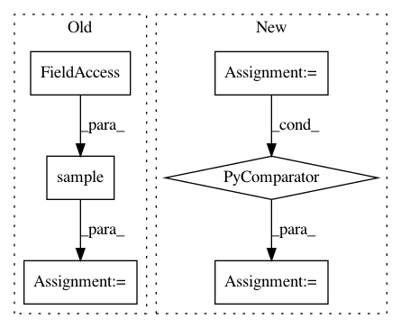

218bc5980ee488f5ac2ddfb9d3c67b8ba5b3fd69,speech/cloud-client/transcribe_streaming.py,,transcribe_streaming,#Any#,29
Before Change
speech_client = speech.Client()
with io.open(stream_file, "rb") as audio_file:
audio_sample = speech_client.sample(
stream=audio_file,
encoding=speech.encoding.Encoding.LINEAR16,
sample_rate_hertz=16000)
alternatives = audio_sample.streaming_recognize("en-US")
for alternative in alternatives:
print("Finished: {}".format(alternative.is_final))
print("Stability: {}".format(alternative.stability))
print("Confidence: {}".format(alternative.confidence))
print("Transcript: {}".format(alternative.transcript))
if __name__ == "__main__":
parser = argparse.ArgumentParser(
description=__doc__,
formatter_class=argparse.RawDescriptionHelpFormatter)
After Change
// In practice, stream should be a generator yielding chunks of audio data.
stream = [content]
requests = (types.StreamingRecognizeRequest(audio_content=chunk)
for chunk in stream)
config = types.RecognitionConfig(
encoding=enums.RecognitionConfig.AudioEncoding.LINEAR16,
sample_rate_hertz=16000,
language_code="en-US")
streaming_config = types.StreamingRecognitionConfig(config=config)
// streaming_recognize returns a generator.
// [START migration_streaming_response]
responses = client.streaming_recognize(streaming_config, requests)
// [END migration_streaming_request]
for response in responses:
for result in response.results:
print("Finished: {}".format(result.is_final))
print("Stability: {}".format(result.stability))
alternatives = result.alternatives
for alternative in alternatives:
print("Confidence: {}".format(alternative.confidence))
print("Transcript: {}".format(alternative.transcript))
// [END migration_streaming_response]
if __name__ == "__main__":
parser = argparse.ArgumentParser(
description=__doc__,
formatter_class=argparse.RawDescriptionHelpFormatter)
In pattern: SUPERPATTERN
Frequency: 3
Non-data size: 6
Instances
Project Name: GoogleCloudPlatform/python-docs-samples
Commit Name: 218bc5980ee488f5ac2ddfb9d3c67b8ba5b3fd69
Time: 2017-07-14
Author: dizcology@hotmail.com
File Name: speech/cloud-client/transcribe_streaming.py
Class Name:
Method Name: transcribe_streaming
Project Name: GoogleCloudPlatform/python-docs-samples
Commit Name: 218bc5980ee488f5ac2ddfb9d3c67b8ba5b3fd69
Time: 2017-07-14
Author: dizcology@hotmail.com
File Name: speech/cloud-client/transcribe_streaming_mic.py
Class Name:
Method Name: main
Project Name: WZBSocialScienceCenter/tmtoolkit
Commit Name: 07c4e7ef4c6b87ed19267ca75bc5846c6dbbbc8b
Time: 2017-10-09
Author: markus.konrad@wzb.eu
File Name: tests/test_preprocess.py
Class Name:
Method Name: